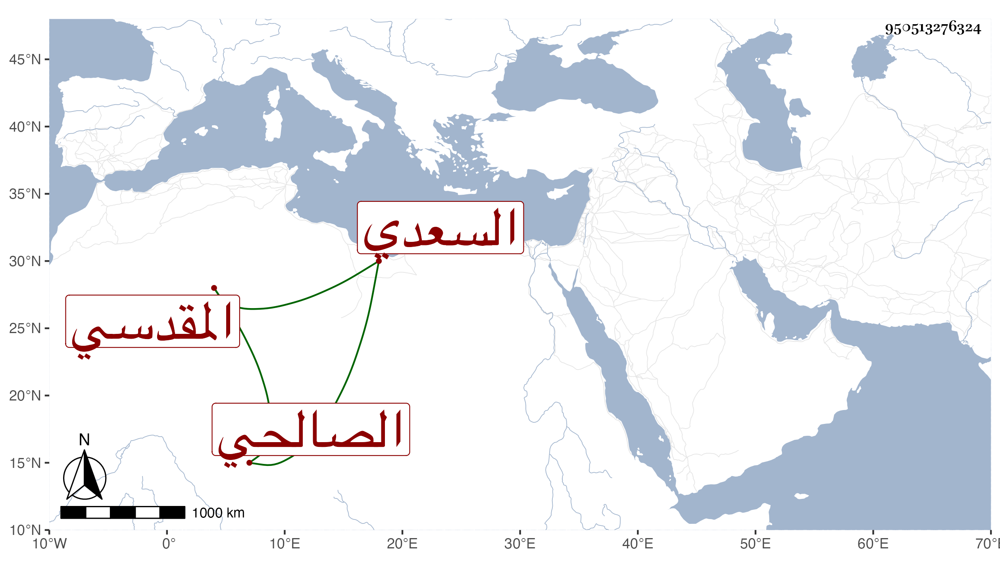

0902Sakhawi.DawLamic.ITO20230111-ara1.EIS1600.950513276324
Biography ID: 950513276324
51
أمة اللطيف ابنة الامام الشمس محمد بن محمد بن أحمد بن المحب عبد الله ابن أحمد بن محمد بن إبراهيم بن أحمد السعدي المقدسي الأصل الصالحي أخت الشمس محمد الماضي ووالدة الشهاب أحمد بن محمد بن أحمد بن محمد بن أحمد بن سليمان بن حمزة المعروف بابن زريق ويعرف أبوها بابن المحب سمعت من والدها في سنة سبع وثمانين الدعاء للمحاملي ومن محمد بن الرشيد عبد الرحمن المقدسي وأجاز لها أبو الهول والمحب الصامت وناصر الدين بن داود والكمال بن النحاس وغيرهم وحدثت وكانت خيرة أصيلة ماتت في جمادى الآخرة سنة أربعين ودفنت بالروضة بسفح قاسيون بالقرب من الشيخ الموفق رحمهم الله وايانا .
